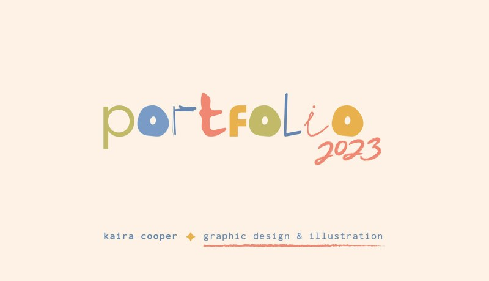
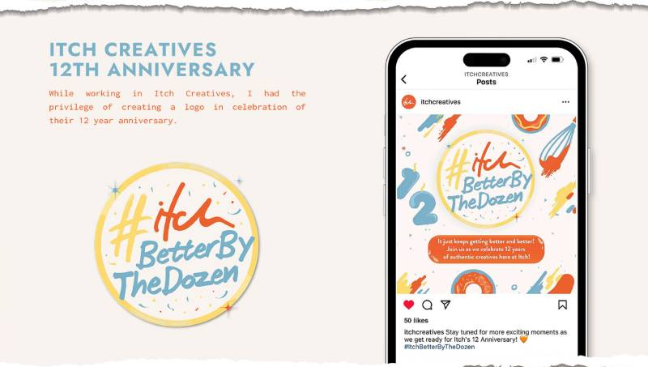
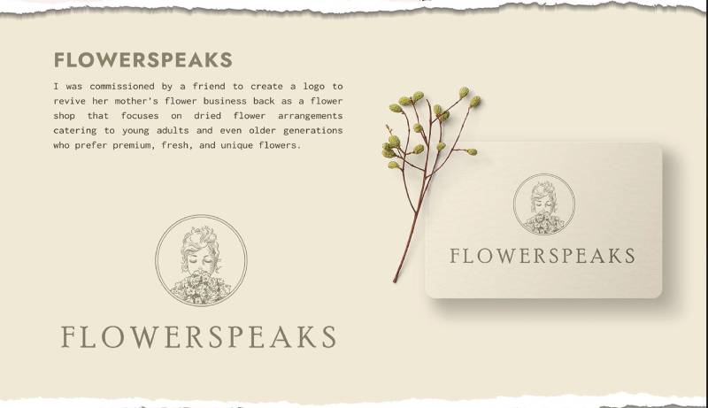
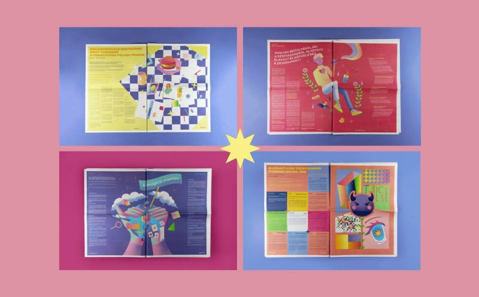
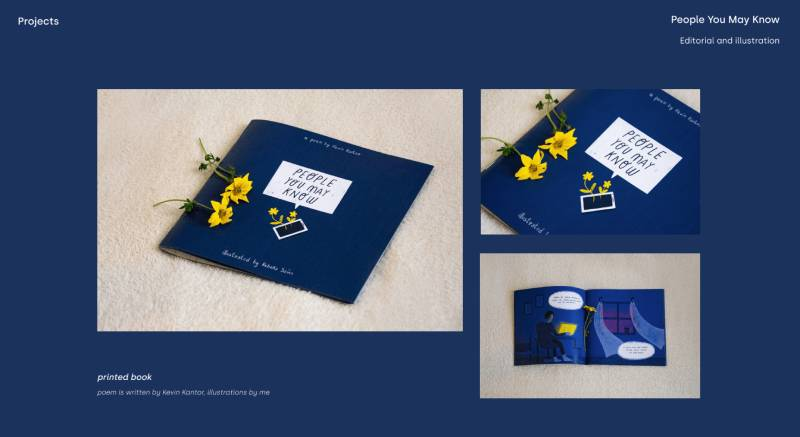

Blog Post 3 - Comparative Analysis
The topic of the project I chose is a portfolio website, I think it's cool to make my own website where I can show my work and I can design it in my favorite style. But before I start I need to gather some sources of inspiration, here are some portfolio website designs that inspire me.
The first portfolio website is Kaira Cooper's portfolio, I really liked the color scheme, fonts, and typography of Karia Cooper's portfolio. The color scheme she uses gives me a very comfortable feeling, the fonts and word colors are obvious, and her typography is clear, highlights her work, and is not confusing. Kaira's portfolio gave me inspiration for the color scheme, as well as how to present my work.
  The second portfolio website is Rebeka Szűcs's portfolio, I really like her typography, the way she uses different color block backgrounds to divide her different works, and the way her works are neatly arranged, and I would like to use a similar presentation in my portfolio website to show my graphic design work in my portfolio site.
 